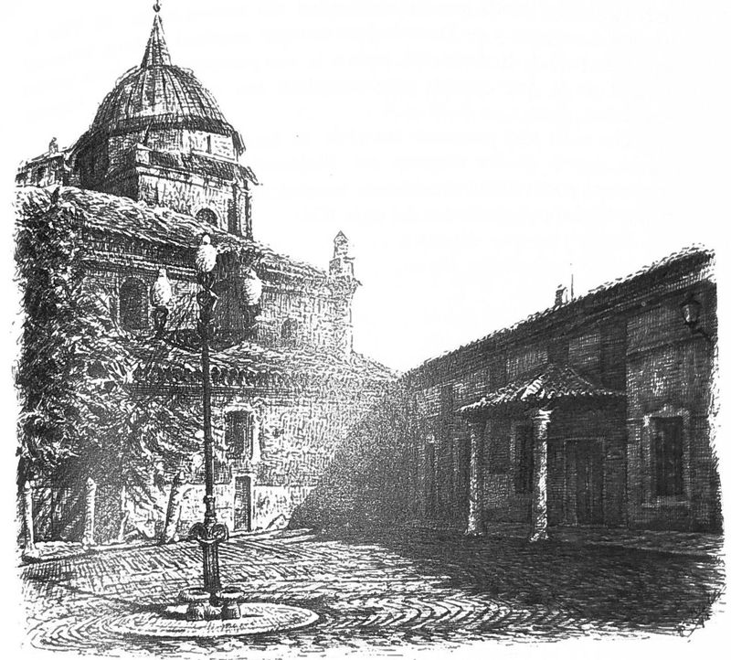
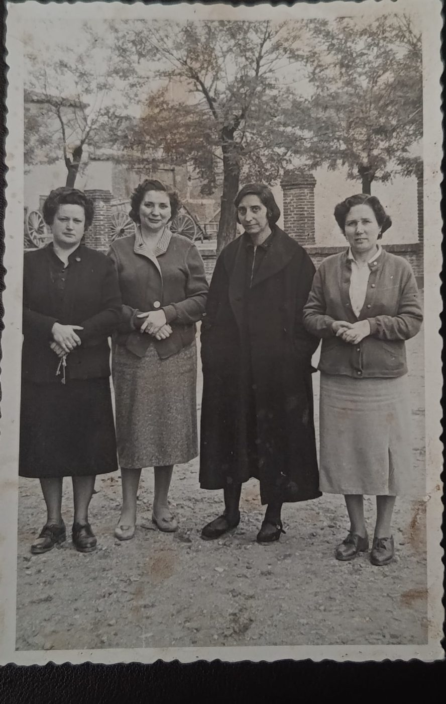
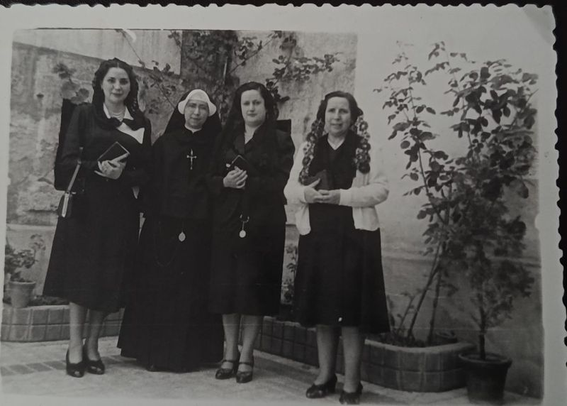
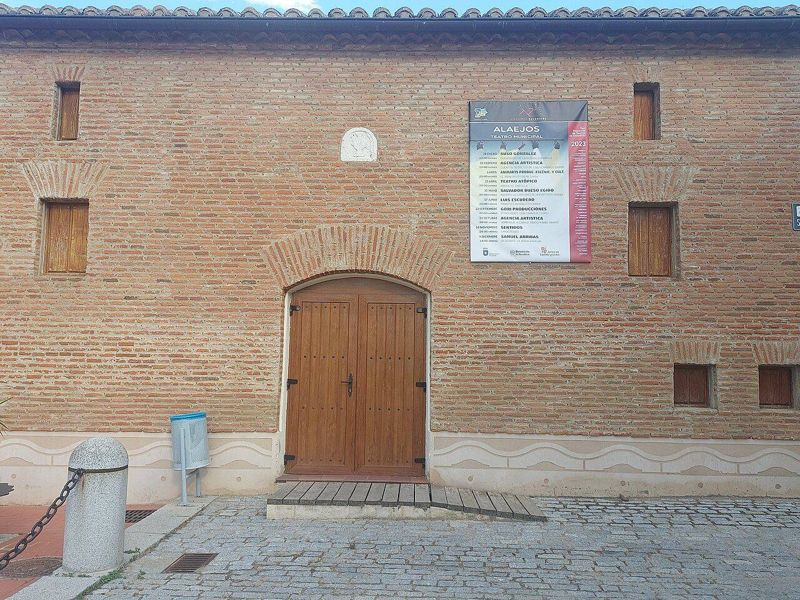
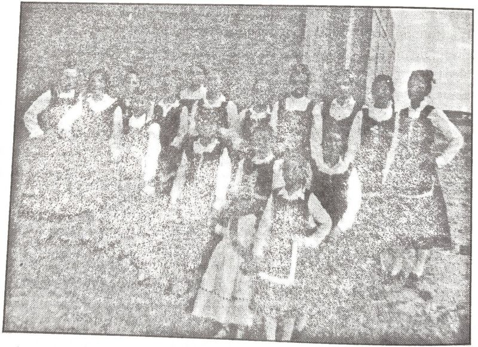
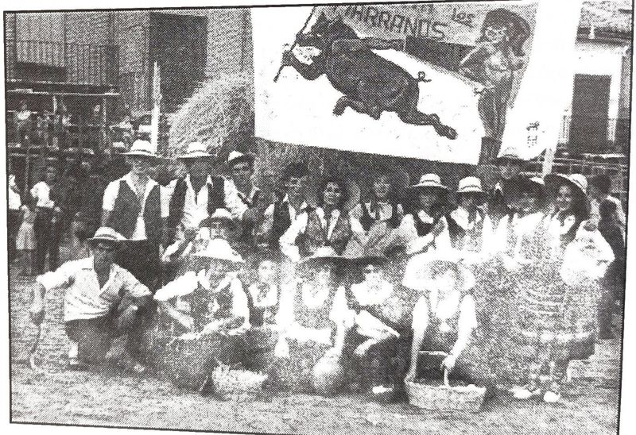

Asociaciones, servicios y lugares de encuentro
El hospital que acabó en centro de salud, las escuelas, los alguaciles, la Asociación de Labradores, los amigos del patrimonio, el club ciclista, las asociaciones y las peñas de 2000, el teatro y el café de la plaza: la vida en común del pueblo, sobre todo en el siglo XX.
En esta página (11 apartados · 15 min de lectura)
Los programas de fiestas no solo han contado la historia antigua de Alaejos. También han servido para que las asociaciones del pueblo se presentaran, para reclamar servicios y para dejar constancia de cómo se vivía. Esta página recoge esa vida en común; los grandes acontecimientos del siglo están en El siglo XX.
Del hospital del Buen Pastor al centro de salud
Alaejos tuvo hospital desde, al menos, el siglo XVI: las ordenanzas de 1580 ya lo mencionan. En 1753 se hicieron cargo de él los Hermanos del Buen Pastor, que le dieron nombre. Cuando lo abandonaron, los ilustrados de la villa lo reabrieron en 1785 para enfermos pobres.


Dos siglos después, el edificio volvió a ser una reivindicación. El mapa sanitario de la provincia de 1980 dejaba a Alaejos como distrito rural dependiente de Castronuño. El 26 de febrero de 1981 el pleno lo rechazó y pidió una unidad sanitaria propia, alegando la historia del hospital, la población de la comarca, las carreteras y un solar de unos 1.300 metros cuadrados. En 1982 llegaron tres millones de pesetas para consolidar el edificio, y a finales de ese año se hicieron las obras (Adelio Castaño, programa de 1993). El viejo hospital acabó siendo el centro de salud, que abrió en 1989. En 2000 era un centro de salud comarcal, con dos médicos y un ATS, que atendía también a Castrejón de Trabancos, Torrecilla de la Orden, Castronuño, Villafranca de Duero y Siete Iglesias de Trabancos (Caballero Morante, Alaejos, del sepia al color, 2001).
Las escuelas
En marzo de 1929 la Gaceta de Madrid publicó la aprobación de dos edificios nuevos de escuelas graduadas, con cuatro secciones cada uno: el de niñas, presupuestado en 118.750 pesetas, y el de niños, en 125.368. El Ayuntamiento puso el 30 por ciento. Ese mismo año nombró hijo adoptivo al ministro de Instrucción Pública, Eduardo Callejo (José Luis Pérez Muñoz, programa de 2008). La historia de los maestros y las escuelas desde el siglo XVIII está en Adelio Castaño, «La enseñanza en Alaejos» (1991).
El libro Alaejos, del sepia al color (2001) incluye una historia del colegio escrita desde el propio centro. Tras la ley Moyano de 1857 funcionaban en Alaejos cuatro escuelas unitarias, con 262 alumnos en total: dos de niñas, en la calle Fortaleza y en la plaza de la Cárcel, y dos de niños, una bajo la casa de los maestros, en Lucas Martín, y otra en los bajos del Ayuntamiento, donde en 2001 estaba el centro de la tercera edad. El Ayuntamiento cedió al Estado los solares para las escuelas graduadas según una Real Orden de 1923, en dos sitios: la plaza Hernández Morejón y el antiguo alcacer del castillo, hoy Ronda del Castillo. Las nuevas escuelas se inauguraron el 22 de octubre de 1932. En 1933 tenían una biblioteca de 103 libros y un jardín escolar en el que, bajo la dirección del maestro Juan Estebaranz, se plantaron las acacias que todavía había en 2001. En 1934 había 64 alumnos por aula, y en 1935, 500 alumnos, aunque muchos faltaban para ayudar en el campo (Caballero Morante, Alaejos, del sepia al color, 2001).
En 1964 las dos escuelas, la de niños y la de niñas, se unieron en una Agrupación Escolar Mixta. Fueron directores Manuel Vara y Vara (1936-1959), Victoriano Fernández, Fidel Lucas Castander (1968-1979), Elpidia Morante, Luis Iglesias Sánchez, Adelio Castaño Casquero (hasta 1990), Isidro Valencia y, en 2001, Concepción Sánchez García. Para entonces el centro se llamaba Colegio Público «Miguel de Cervantes» y daba Infantil, Primaria y el primer ciclo de la ESO, al que venían también los alumnos de Siete Iglesias. La matrícula cuenta la historia de la despoblación:
| Año | Alumnos |
|---|---|
| 1935 | 500 |
| 1960 | 420 |
| 1970 | 308 |
| 1980 | 241 |
| 1990-1991 | 195 |
| 2000-2001 | 130 |
De las maestras que pasaron por la escuela de niñas, Antonio Lucas Varela recoge diecisiete nombres en Alaejos. Una antropología cultural (2024), de Pilar Lacalle y Jacoba Martín a Elpidia Morante y Maruja Álvarez (véase Comercios, oficios y servicios del siglo XX). Cuatro de ellas, Carmen Casas, Mercedes Romón, Adalia Sampedro y Juliana Ámez, son para él «las maestras más famosas» del siglo XX, y en 2026 envió estas dos fotografías suyas.




Fuente: Alaejos, del sepia al color (2001). Desde 1975 incluye los párvulos de cuatro y cinco años.
En 2001 entraban cada año entre cinco y siete niños, y el texto preveía que pronto sobraría uno de los dos edificios y que los alumnos de la ESO irían a Tordesillas: «La única realidad es que nos quedamos sin niños» (Caballero Morante, Alaejos, del sepia al color, 2001).
La primera escuela gratuita de la que hay noticia es la que abrió en 1785 la Real Sociedad Caritativo-Económica en la Casa de Misericordia, para niñas y para niños pobres.


En 1980 los vecinos se preguntaban qué iba a ser del edificio del antiguo colegio libre adoptado, cerrado desde hacía años. El Ayuntamiento pidió que se instalara en él una sección de Formación Profesional de primer grado, en las ramas de Electricidad y Administración, para Alaejos y los pueblos de alrededor. El Ministerio no la aceptó para el curso siguiente (Adelio Castaño, programa de 1980).
La biblioteca municipal
La biblioteca pública municipal se inauguró en 1981 en una sala de la Casa Consistorial. En 2001 estaba en la calle Jardines, en el edificio del antiguo instituto: 132 metros cuadrados, con una sección infantil y otra de adultos, 694 socios y unos 11.000 libros y 570 vídeos, que el Centro Coordinador de Bibliotecas renovaba cada dos o tres meses. Se prestaban dos libros por quince días y un vídeo por dos, que había que devolver rebobinado. Dos veces al año, en Navidad y Semana Santa, organizaba semanas culturales (Caballero Morante, Alaejos, del sepia al color, 2001).
Los alguaciles de 1906
En 1906 el Ayuntamiento aprobó un reglamento para sus alguaciles, que Adelio Castaño transcribió en 1986 como retrato de una época (programa de 1986). Debían estar en la Casa Consistorial desde las seis y media de la mañana, con tres horas de descanso de abril a septiembre y dos el resto del año. Esperaban en la sala de al lado de la oficina, sin entrar si no los llamaban, y tenían que presentarse aseados, descubiertos y sin que les faltara ninguna prenda, salvo la gorra. A casa de los concejales debían ir «con el mayor respeto».
Labradores y ganaderos
A finales del siglo XIX los labradores se organizaron en una Asociación de Labradores, que administraba el prado de Carrealvar y negociaba con los ganaderos el aprovechamiento de rastrojos y barbechos (véase El término). Más tarde existieron la Hermandad de Labradores y Ganaderos, con su pozo y sus abrevaderos en el Arrabal, y la Cámara Agraria Local, que reparó en los años ochenta la base de la cruz de Carrezamora y ayudó a crear el museo parroquial.
Los amigos del patrimonio
En la primera mitad de los años ochenta la Asociación Cultural Jorge Guillén editaba una revista, El Caño. La Asociación Amigos del Patrimonio Cultural de Alaejos (APCA) empezó a fraguarse en el verano de 1988 y se reconoció legalmente el 14 de marzo de 1990, con el fin de estudiar, conservar, restaurar y dar a conocer el patrimonio del pueblo. En 2001 tenía más de treinta socios, y como socio de honor a Jesús Urrea, director del Museo Nacional de Escultura. Entre sus logros contaba la restauración de la talla de la Virgen de la Casita en 1990, la recuperación del Árbol de la Virgen, la colaboración en los libros de 1991 y en el museo parroquial, y sus informes sobre el estado de los monumentos; su gran proyecto era un museo etnográfico (Caballero Morante, Alaejos, del sepia al color, 2001). En 1990, año del V centenario de la aparición, propuso que la Virgen de la Casita fuera alcaldesa de honor; en 1992 propuso la bandera de la villa, que se estrenó en 1996, y en 1999 aconsejó al Ayuntamiento dónde volver a levantar la cruz de Carrezamora (programa de 1996; programa de 2000).
En 1993 Adolfo M. Araújo contaba que, tras un robo sacrílego cometido en el mes de mayo y la feliz recuperación de lo robado, se había hecho realidad una idea del párroco: una zona de seguridad en Santa María que sirviera de pequeño museo de arte sacro. La pagaron entre el pueblo, los alaejanos de fuera, el Ayuntamiento, la Cámara Agraria, el Arzobispado, la Diputación y las cajas de ahorro. Araújo lo defendía como forma de que el arte de los pueblos se quedara en los pueblos (programa de 1993; véase Iglesia de Santa María).
Esta web y su biblioteca continúan ese trabajo (véase Quiénes somos).
El club ciclista
El Club Cicloturista de Alaejos se constituyó el 29 de octubre de 1995 con una docena de aficionados; en su primer año ya tenía 40 socios y 10 colaboradores. Su anagrama era el pueblo visto dentro de una rueda de bicicleta, con la estrella del escudo debajo. Como el término es llano, para subir puertos tenía que salir fuera: la Peña de Francia, Sanabria, Foncebadón, y con los años el Angliru, el Alpe d'Huez y el Mortirolo. El 28 de abril de 1996 organizó el primer Día de la Bici, con más de doscientas personas pedaleando hasta la explanada de la Casita (César Salamanqués Santana, programa de 1996). También organizó rutas por los pozos y abrevaderos del término (programa de 1997). A los cinco años, en 2001, pasaba de cien socios. El anagrama lo había diseñado Javier Alonso Guinot, y además del Día de la Bici organizaba la búsqueda «del gallo perdido», en la que había que encontrar en bicicleta dos gallos escondidos en el término, el Trofeo Virgen de la Casita, una vuelta al camino de circunvalación y una proyección de vídeos y diapositivas en el teatro a finales de agosto. Desde el 23 de diciembre de 2000 lo presidía Fermín Berdote Pérez (Caballero Morante, Alaejos, del sepia al color, 2001).
En junio de 1996 empezó su escuela de ciclismo, con veinte alumnos y Antonio Blanco Rollán como director. Pronto empezó a ganar carreras en toda la provincia (programa de 1998). En 2009 sus corredores subieron 116 veces al podio, 59 de ellas a lo más alto, y uno quedó segundo en el campeonato de España infantil. El club tenía entonces 170 socios (programa de 2010; programa de 2005).
El teatro y el café de la plaza


.jpg){kind=link}
El teatro municipal, del que los mayores decían que parecía un pequeño Calderón de Valladolid, se restauró hacia 2016, en una década en que también se recuperaron el Caño, el camino de la Casita y las ruinas del castillo. Charo R. Vega lo celebró con unos versos (programa de 2024).
En la Plaza Mayor, el café que en 1985 se llamaba Viena había sido antes el Gran Café Peña y, antes aún, el café de Perico. Un poema de aquel año, firmado P. S. B., lo dedica a su dueño, Ignacio del Castillo, y a su terraza, desde la que se contempla «la más esbelta torre de Castilla» (programa de 1985).
En 2000, en la Plaza Mayor estaban el bar Maui, la cafetería Viena, el bar La Garrocha, el mesón El Callejón y, en los bajos del Ayuntamiento, el bar y salón de juegos de la tercera edad. El libro de 2001 enumera también los bares, discobares y restaurantes del resto del pueblo y de la carretera, y los comercios y talleres de entonces (Caballero Morante, Alaejos, del sepia al color, 2001).
La plaza sigue siendo el lugar donde el pueblo se reúne, también para reivindicar. El 24 de julio de 2021 acogió una marcha contra la violencia de género (Alicia Salamanqués Santana, programa de 2021).
Las asociaciones del año 2000
En 2001 Armando Caballero Morante reunió en Alaejos, del sepia al color los datos de las asociaciones del pueblo, muchas veces escritos por ellas mismas. Las cofradías se cuentan en Fiestas y tradiciones y en Cuaresma y Semana Santa.
| Asociación | Fundación | Socios | Qué hacía |
|---|---|---|---|
| Sociedad de Cazadores | 7 de febrero de 1973 | 233 | Coto, campeonatos, Copa Villa de Alaejos de galgos (desde 1989) |
| Asociación de Padres de Alumnos, después AMPA | 22 de noviembre de 1978 | — | Actividades y talleres para los niños del colegio |
| Asociación de la Tercera Edad | 1980 | 330 | Sede en los bajos del Ayuntamiento; fiesta en septiembre |
| Cruz Roja | 29 de agosto de 1982 | unos 150 | Puesto de primeros auxilios en la carretera N-620 y ambulancia |
| Rondalla y Grupo de Danzas | 1988 | unos 30 | Jotas, romances y bailes regionales |
| Amigos del Patrimonio Cultural | 1988-1990 | más de 30 | Estudio y defensa del patrimonio |
| Hermandad de Donantes de Sangre | 1990 | 138 | Dos o tres colectas al año |
| Club Cicloturista | 29 de octubre de 1995 | más de 100 | Marchas, escuela de ciclismo, Día de la Bici |
| Asociación de Mujeres | Enero de 1996 | — | Cursos, exposiciones, desfile de trajes de época para las iglesias |
| Asociación Cultural y Deportiva El Arcamadre | 29 de junio de 2000 | 270 | Fútbol, vuelta ciclista de cadetes, concursos de dibujo |
Fuente: Alaejos, del sepia al color (2001). Había además unas Aulas de Cultura de la Diputación, con una profesora que venía una vez a la semana.
Algunas tienen su historia. La Sociedad de Cazadores la fundaron 32 vecinos y vivió su mejor época de caza a finales de los setenta; la concentración parcelaria y la modernización del campo redujeron después las piezas. Fue la primera de la comarca en legalizarse, y en 1990 redactó el primer plan de ordenación cinegética de la región, que sirvió de modelo. La Rondalla y Grupo de Danzas, de jóvenes de 6 a 30 años, tocaba y bailaba jotas castellanas y piezas de Salamanca, Zamora y La Mancha, y en 2000 actuó en bodas, misas castellanas y recitales en Alaejos, Toro, Diosleguarde, Morales de Toro y Alba de Yeltes. Ese mismo año, Año Santo, siete caballistas del pueblo fueron a caballo hasta Santiago en diez etapas, y Alaejos tuvo un estand en la Feria de Turismo de Interior de Valladolid, preparado por la Oficina de Turismo y una agrupación de vecinos (Caballero Morante, Alaejos, del sepia al color, 2001).


Las peñas
«Las peñas son las auténticas protagonistas de las fiestas patronales», escribía Armando Caballero Morante en 2001. Según él, la más veterana era La Antigua, fundada a principios de los sesenta por treinta socios con fines culturales y recreativos: pagaban una cuota semanal para hacer excursiones, la primera a Sevilla. En 2001 seguía en activo, con 18 socios, y había ido a la Expo de Lisboa de 1998. En 1967 nació Los Culedros, que viajaba sobre todo a los toros. Iban a San Isidro, a Madrid, y aprovechaban el día: almuerzo, visita al Batán, las escaleras mecánicas de Galerías Preciados, la corrida en Las Ventas y teatro por la noche. Eran nueve, los que cabían en el taxi-furgón, y pagaban 25 pesetas a la semana, o 100 en verano, cuando se cobraba la soldada; «Calero» ingresaba el dinero en el banco cada lunes. Después vino Los Viudos, que en 2001 se mantenía para las fiestas (Caballero Morante, Alaejos, del sepia al color, 2001).
En el año 2000 el libro contaba 46 peñas: Vikingos, Los Plataneros, El K-OS, El Éxtasis, Las Chunguitas, El Arrecajel, La Hebra, El Rejón, La Nuestra, El Toril, La Hexkoba, La Puba, El Chupete, Los Templas, Okley, La Songua, Los Siux, El Guerto, De-Grada-2, Bourbon, Los Dinamitas, La Liebre Coja, Velay, Miembro, Trakas, El Averno, La Mariseca, Los Marranos Negros, El Voltaje, La Trifulca, El Haraquiri, La Jarka, El Horquín, Atestados, Graffiti, La Cueva, La Rabia, Los Viudos, El Enrebujo, Aportabaco, Los Aperos, Los Agrícolas, La Antigua, La Marrana, Los Verrakos y El Globo. En el desfile de peñas de ese año el Ayuntamiento premió a Los Vikingos (50.000 pesetas), Velay (25.000) y La Songua (15.000), y a la más divertida, con un jamón (Caballero Morante, Alaejos, del sepia al color, 2001).


Para seguir leyendo
- Adelio Castaño, «¿Cuál es el destino del edificio que fue colegio libre adoptado?» (1980), «Reglamento a que han de sujetarse los alguaciles» (1986) y «El hospital del Buen Pastor debe convertirse en unidad sanitaria local» (1993).
- César Salamanqués Santana, artículos sobre el club y la escuela de ciclismo (1996, 1997, 1998, 2005 y 2010).
- Armando Caballero Morante (recop.), Alaejos… del sepia al color (Diputación de Valladolid, 2001), capítulos «Servicios», «Enseñanza pública», «Biblioteca pública municipal», «Asociaciones» y «Peñas». Se cita con autorización.
- Adolfo M. Araújo, «Nuevamente en torno a la Sociedad Económica de Amigos del País de la villa de Alaejos» (2001).
Cómo citar esta página
Amigos de Alaejos, «Asociaciones y lugares de encuentro», https://www.amigosdealaejos.org/historia-del-pueblo/asociaciones-y-lugares-de-encuentro/ (revisión del 23/11/2026).